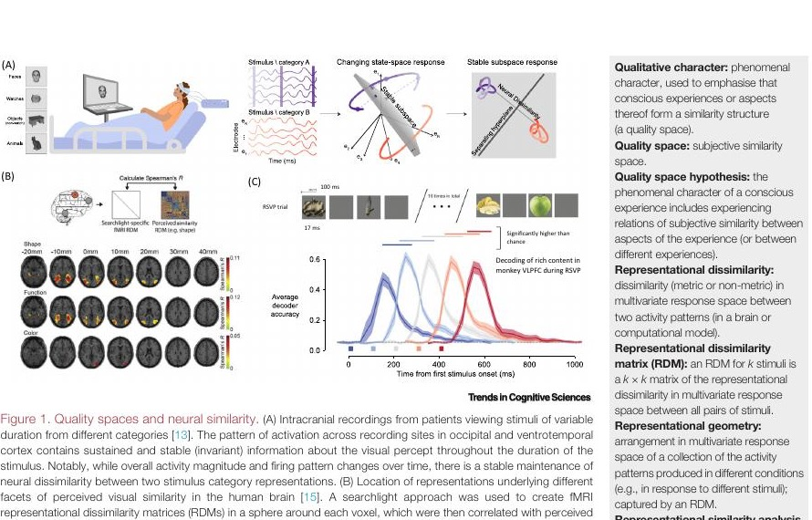
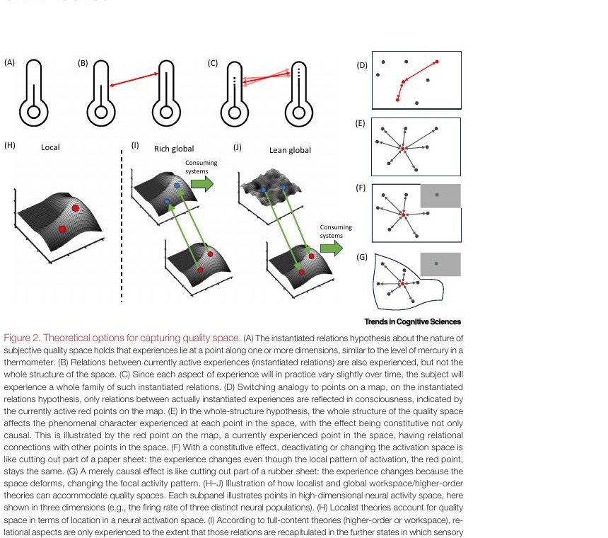

Fleming & Shea · Trends in Cognitive Sciences · 2024
Why does red feel closer to orange than to green?
A visual guide to the idea that conscious experience may have a map-like shape — and that the shape of that map could matter for what experience feels like.
consciousnessneural similarityquality spaces
a map of possible experiences
The whole paper in 5 minutes
Your mind may keep a map, not just a pile of feelings.
Imagine tasting a lemon, then a lime. They are different — but your brain also knows they are neighbours. This paper calls that neighbourhood map a quality space: a map of what experiences feel like, arranged by resemblance.
🟥 Red sits nearer to orange than green.
🎵 Two nearby notes feel more alike than a bass note and a high whistle.
🧠 The claim: these felt distances may mirror distances between brain-activity patterns.
Think Google Maps for feelings.Your current location is one feeling. The surrounding roads and places tell you where it is relative to the others. The paper asks whether the whole map helps make that location feel the way it does.
The clever measuring trick: compare patterns, not volume.
Researchers can show people lots of things and ask which seem alike. They can also record the brain’s response to those same things. If the two maps have the same shape, that is evidence that the brain pattern tracks the feeling.
1️⃣ People make a “what feels similar?” map.
2️⃣ Brain recordings make a “what activates similarly?” map.
3️⃣ If the maps line up, neural geometry may explain felt geometry.
That does not mean the loudest brain signal wins. A signal can fade while the pattern of relationships stays stable. The stable shape may be the important thing.
Two versions of the big idea.
Small claim: you experience relations among things happening now — red beside blue, a loud sound after a soft one. Big claim: even one lonely flash of red gets some of its feel from the entire set of colours your brain could represent.
Paper map or rubber sheet?Cut a corner off a paper map: your “you are here” dot stays put, but what the map represents has changed. Stretch a rubber sheet: the dot moves because the sheet deforms. The authors use this contrast to separate a deep, map-wide change from an ordinary change to the local signal.
Why consciousness theories care.
Some theories put conscious contents mainly in sensory brain areas. Others say information must be copied or broadcast to a wider brain network. All can handle the small claim. The big claim is harder for theories that need a full copy of the whole sensory map somewhere else.
📍 Local view: the sensory map itself can carry the feel.
🚪 Lean “gate” view: let the sensory map through, without redrawing all of it.
📋 Full-copy view: needs the map’s relationships copied too — a much taller order.
TL;DR 🧠💥
The paper says feelings may be like locations in a neural map. The key future experiment is brutal and beautiful: change the wider map, recreate the same local dot, and ask whether the experience changes. If it does, the map is doing more than holding the dot.
braingood2 · begin with the puzzle
The paper is about a very ordinary fact: experiences have neighbours.
When you see red, you do not merely have a private “red event.” Red seems closer to orange than to green. A high note seems closer to a nearby high note than to a low bass note. The authors ask whether this pattern of felt closeness is part of consciousness itself — and whether the brain carries a matching pattern.
Keep this one sentence
Maybe a feeling gets some of its character from its place in a map of other possible feelings.
The word “quality” here means what an experience is like. “Space” only means a set of locations defined by near and far relationships. It does not mean a physical place in the head.
1. Start: people can judge which experiences feel alike.
2. Look: the brain also has patterns that can be near or far.
3. Ask: is the pattern just a record, or part of what makes the feeling what it is?
First principles · one experience is never the whole story
Build the two maps yourself.
Click an experience below. This board shows the exact move the paper wants us to understand: turn a felt comparison and a distributed brain response into two relational maps.
One example, three views
These colors are a toy example for intuition, not data from the paper. The logic is the same for faces, sounds, smells, or other sensory qualities.
1 · What a person reports
The scientist never reads a feeling directly. They ask comparative questions: “Which pair feels more alike?” or ask people to arrange items by similarity.
red“More like orange than green.”
Many answers make a felt-similarity map.
2 · What a brain measurement contains
A conscious experience is not assumed to live in one neuron. Each bar below is the activity of one measurement channel. The whole pattern is the candidate code.
red → [82, 31, 64, 18, 48]
3 · The question is distance
Compare this pattern with the other patterns. Similar activity patterns are close; different patterns are far.
orange is near
green is farther away
This makes a neural-similarity map.
The method without the buzzwords
Representational similarity analysis asks one simple question: do the two maps have the same shape?
For every pair of items, write down a distance. The left grid is “how different did it feel?” The right grid is “how different were the activity patterns?” The exact values can differ. What matters is whether the near pairs and far pairs line up.
Felt distances
From a person’s similarity judgements
ROGBR0144O1034G4303B4430
↔same relation pattern
Neural distances
From the full activity pattern for each item
ROGBR0.2.8.9O.20.6.8G.8.60.5B.9.8.50
This is evidence, not the conclusion. A matching shape suggests that a neural pattern carries the same distinctions as experience. It does not yet prove that the neural geometry makes

What the review actually gathers. Figure 1 summarizes studies in which stable neural relationships track visual percepts, feature-specific perceived similarities are found in visual cortex, and rich visual content can be decoded from prefrontal ensembles. These are sources of evidence the authors compare; this paper itself is a review, not a new experiment.
The real disagreement
Does the map merely locate a feeling, or does the whole map help make the feeling?
Modest claim: active relations
When red and orange are both in your current experience, their relation can be felt. This is like seeing two dots at once and seeing the distance between them.
All the accounts discussed can handle this.
Stronger claim: whole structure
Even if only red is currently present, red’s particular feel partly depends on its relation to the whole available set of colors. The background map contributes to the current point.
This is the challenging, testable claim.
A test that could change minds
Hold the local pattern fixed. Change the surrounding map. Then see whether the experience changes.
The logic, slowly
Same dot, different map?
First alter the wider sensory activity space — for example, the connections that shape the map. Then recreate the original local pattern. If the experience changes anyway, the local pattern cannot be the entire story.
Step 1: red’s local pattern sits in its ordinary network of relations.
This is the paper’s central proposed experiment. It is hard: the strongest versions require precise causal interventions, most feasible in animal models, plus a way to assess perceptual similarity. That difficulty is why the paper is an agenda for future research, not a declaration that the case is closed.
Where theories enter — only now
Theories disagree about where the map must be represented.
Localist accountThe relevant sensory neural map itself helps realize experience. A map-wide effect is a natural possibility.
Lean workspace or higher-order accountA wider system can make a sensory representation conscious without copying every fine relation from the sensory map. It can also allow the sensory map to supply the quality structure.
Full-content workspace or higher-order accountIf the wider system must carry the conscious content in full, then a whole-map effect raises a demand: the wider representation must preserve the entire relational structure too.

Read Figure 2 with the new question in mind. Panels D–G contrast “only the active dots matter” with “the background map matters”; panels H–J show how local, rich-global, and lean-global theories can implement the idea.
The paper in one honest paragraph
Fleming and Shea are not saying that scientists have solved consciousness or found a literal color map in the brain. They review evidence that the shape of neural activity patterns can mirror the shape of felt similarity. They then argue that a decisive experiment would ask whether changing the larger neural map changes an experience even when its local pattern is recreated. The answer would put real pressure on theories of consciousness.
Review this explainer
comment/feedback
Use the local feedback panel to highlight text, select an element, or leave a general note. Submitted batches are saved for a focused revision of this explainer.
01
Open the panel
Use the floating launcher or the button below.
02
Attach a note
Highlight wording, select an element, or describe the gap in your understanding.
03
Submit batch
The server appends your review to the local inbox for processing.
Local inbox: paper-demo/quality-space-consciousness/feedback/inbox.jsonl